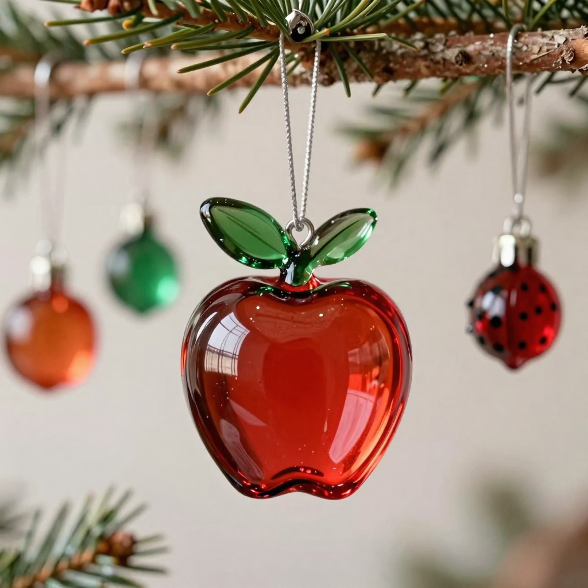

«Рождественское яблоко», Великий Новгород (д. Трубичино)
Столетие назад стеклодувное ремесло на Новгородской земле потеряли. Один предприниматель решил его вернуть — и вот в Трубичино снова выдувают ёлочные игрушки, какие сто лет назад гремели на весь мир.
Читать всю историю
Мастерская «Рождественское яблоко» — в деревне Трубичино, на въезде в Великий Новгород. Начиналась в 2019-м как небольшое мелкосерийное производство, а сегодня это целая стеклодувная лаборатория с экскурсиями и аншлагом на мастер-классах.
Свою историю мастерская ведёт к братьям Круженковым: в конце XIX века они открыли стеклянный завод в Малой Вишере и создали при нём художественную школу стеклодувов. Её работы не уступали вещам из Чехии, Италии и Германии — потом революция, и ремесло исчезло. «Рождественское яблоко» вернуло его: игрушки и сейчас выдувают вручную, серебрят изнутри и расписывают красками.
Название — из старой традиции украшать ёлку яблоками: в мастерской всюду стеклянные яблоки, а на участке растёт сад зимних яблонь. Среди мастеров — Сергей Яковлев, чей калейдоскоп хранится в музее Дэвида Брюстера, изобретателя калейдоскопа.
Гостю показывают, как в огне рождается шар, и учат расписывать игрушку самому. Мечта создателя — десять мастерских и репутация новогодней столицы у Великого Новгорода.
А у вас на ёлке остались игрушки, сделанные руками задолго до конвейера? Или уже только фабричный лоск?
Источники: christmasapple.com — сайт, ВКонтакте. Иллюстрация: генерация ИИ для проекта